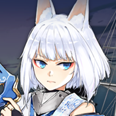
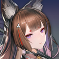
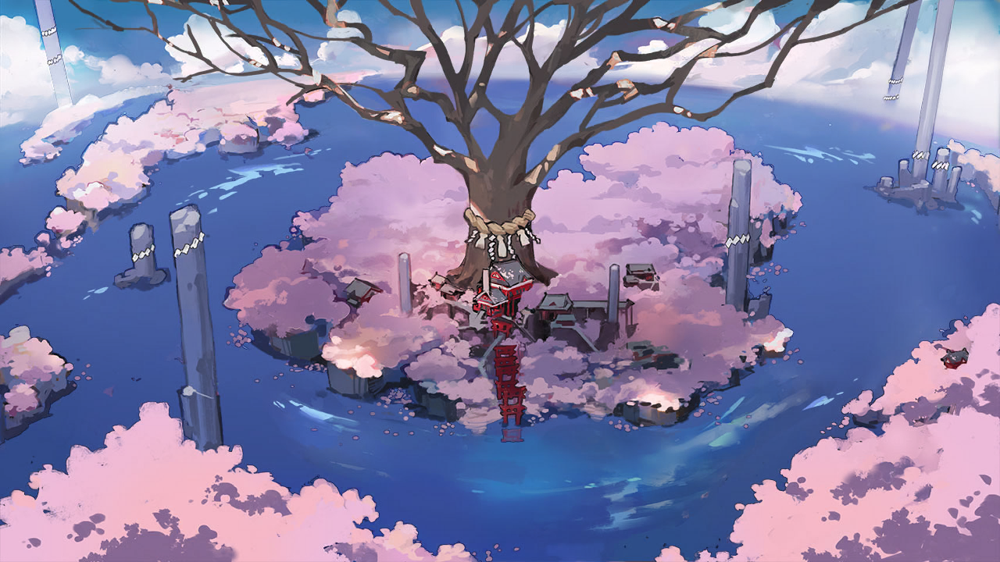
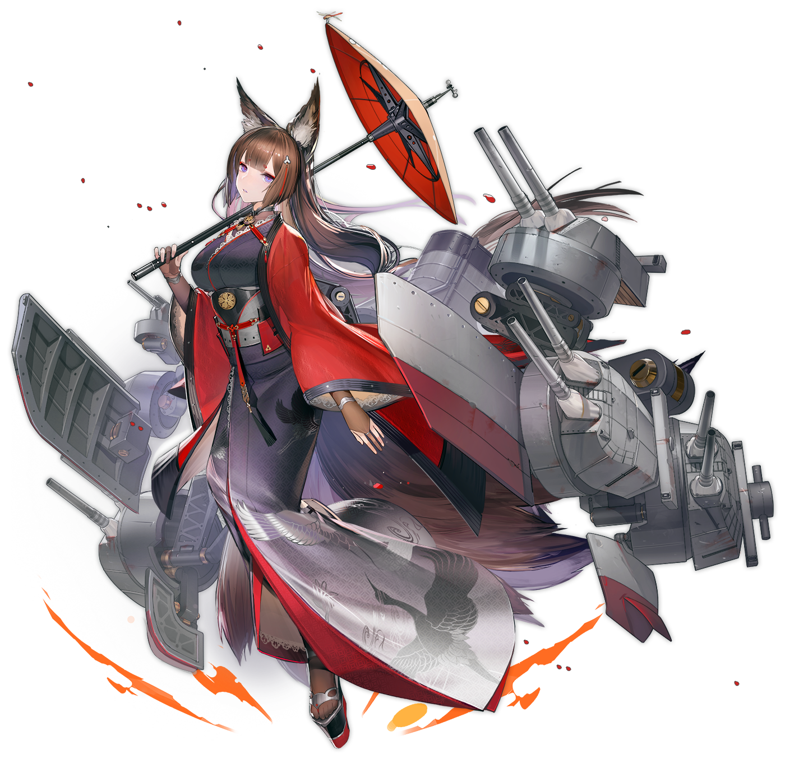
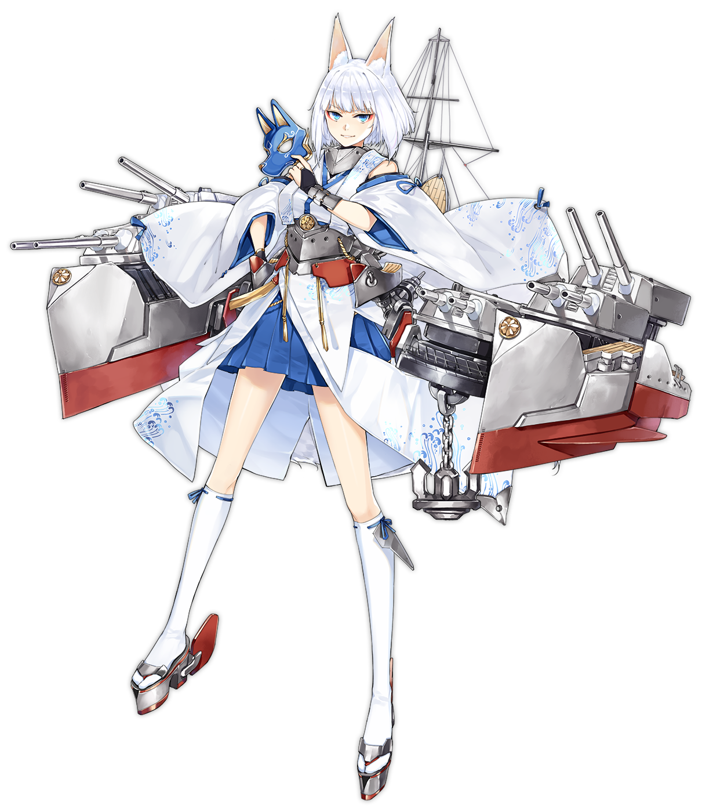
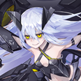

Преемственность

Где то на севере Тихого океана. -- 28° 30' северной широты 177° 54' западной долготы |
|||
Хирью |
Мы готовы?! Противник контратакует! | ||
| Первый и Второй авианесущие дивизионы, заряжайте свои торпедоносцы. Готовьтесь к антикорабельной атаке! | Акаги |
||
Кага |
Что?! Менять оборудование прямо сейчас?! Ни-сама, я не могу сделать это! Что если мы попадём под вражеские удары в момент когда мы не готовы?! |
||
| Множественные цели на высоте 2000! Это вражеские самолёты! | Сорью |
||
| Акаги |
Они зашли сзади?! | ||
| Чёрт! Отозвать истребители! Нам нужна защита от воздуха прямо сейчас! *Взрыв* Грррррр! |
Кага |
||
| Акаги |
Кага! Кага! | ||
............. ..... Потерять бдительность.....в такой критический момент.... ... Прости. Похоже я не смогла оправдать твои ожидания.. ..... Амаги...сама.... ... |

Много лет назад... |
|||
| Амаги: | *смеётся* Шах и Мат | ||
| Кага: | Агрх! | ||
| Акаги: | Это была твоя десятая победа подряд! | ||
| Кага: | Ты играешь грязно...! Ты выманила моего Золотого Генерала! Это было не честно! | ||
| Амаги: | Ты слишком сосредоточена на атаке. Твоя судьба была решена в тот момент когда ты выдвинула Короля на центр поля. Давай просто сойдёмся на том что скрытно наступать, при этом делая вид что ты сидишь в глухой обороне, это очень эффективная стратегия. | ||
| Кага: | Посмотрите на неё, как самодовольно виляет хвостами... Тебе просто повезло застать меня врасплох! Я тебе покажу... Давай сыграем ещё одну игру! | ||
| *Играют ещё одну партию* | |||
| Кага: | Ааах! Чёрт возьми! | ||
| Акаги: | А вот и одиннадцатая победа подряд! | ||
| Амаги: | Боюсь, уже довольно поздно... Акаги, нам пора домой. Мне бы не хотелось мешать тренировкам Каги. | ||
| Акаги: | Конечно! | ||
| Кага: | Что? Сбегаешь потому что боишься наконец проиграть мне? | ||
| Амаги: | Вовсе нет. Через два дня Империя Сакуры проводит ежегодные военно-морские учения. Ты ведь не забыла об этом, правда? Кстати говоря, ты согласна с тем что в реальном бою мы более равны чем в настольной игре? | ||
| Кага: | Так и есть. Тогда мы проверим чей корабль современности самый мощный в реальном бою ! | ||
Муцу |
Сестрёнка, я проверила всех участников этого года... и они все кажутся очень целеустремлёнными! Я так взволнована! | |
| Сколько можно тебе говорить не называть меня "сестрёнка" при посторонних?! | Нагато |
|
| Муцу |
Но ведь ты моя старшая сестра, почему я не могу называть тебя "Сестрёнка"? | |
| *Вздыхает* ... Называй меня как хочешь... Завтра у нас тренировка... Надеюсь всё пройдёт хорошо... | Нагато |
Воспоминание 1
| Нагато |
Я Нагато, флагманский корабль Объединённого флота! Я буду судить военно-морские учения в этом году! ...В эти неспокойные времена мы сталкиваемся с угрозами со всех сторон, не только со стороны хаоса, который вызывают Сирены, но и со стороны других сил по всему миру. И поэтому... ... сейчас как никогда мы все должны объедениться! И мы должны показать нашим врагам, что флот Империи Сакуры сильнее, чем когда либо прежде! *Флагман Объединённого флота и жрица Империи Сакура Нагато пристально обвела взглядом все корабли, присутствовавшие на военных играх.* Флагманский корабль победившей в военных играх этого года стороны будет назначен следующим флагманом Объединенного флота! |
|
!!! |
Все |
|
| Кага(Линкор) | Нагато сама... следующий флагман?! | |
Тишина! Сейчас я объявлю составы команд для учений этого года! Красная команда: Линейный крейсер "Амаги"... Синяя команда: Линкор Кага... |
Муцу |
|
Кага(Линкор) |
Какая прелесть! Амаги, ты готова к реваншу? | |
Военные учения этого года определят дальнейший курс для нашего Объединенного флота. Я хочу, чтобы вы все помнили об этом. Я хочу, чтобы вы продемонстрировали, всё на что вы способны, и боролись в полную силу! ...Теперь, начнём же учения Объединённого флота! |
Нагато |
Воспоминание 2
Хатакадзэ |
Что?! Что флагман команды "Красных" делает на линии фронта, впереди своего авангарда? | |
| Учения - не место для бездельников. Кага может начать действовать непредсказуемо, если я не покажусь. | Амаги |
|
| Хатакадзэ |
Ты должно быть слишком уверена в себе, что бы выйти вперёд к линии фронта? Это же не просто игра. | |
| Возможно. Мне правда нравится придумывать новые стратегии, но и повоевать я способна. | Амаги | |
| Хатакадзэ | Мда.. Я уверена, что вам повезло, это всего лишь учения, и я не настоящий ваш враг в реальном бою. Но всё же я не позволю вам продвинуться дальше, как и поступили бы враги. Если вы хотите пройти вам придётся победить меня! | |
| Тогда давай устроим хороший бой. *Хихикает* | Амаги |
Воспоминание 3
| Хатакадзэ | Всё кончено. Ничего не поделать, когда сталкиваешься с превосходящей огневой мощью. | |
| Ты всё равно хорошо показала себя. | Амаги | |
| Хатакадзэ | ...Амаги, ты действительно собираешься сделать это? | |
| Что ты имеешь в виду? | Амаги |
|
| Хатакадзэ |
Ты действительно хочешь стать следующим флагманом Объединённого флота? | |
| ... ... ... | Амаги | |
| Хатакадзэ | Вроде бы в тебе ничего не изменилось, но когда мы сражались я почувствовала что ты стала другой. Я не могу придумать другой причины, по которой ты сама пошла в авангард вместо того что бы командовать своей группой с позиции флагмана. |
|
| Тебе показалось... Возможно, просто пришлось сменить обычный темп. Это может пригодиться в будущем. Времена меняются: если мы будем продолжать практиковать одно и то же каждый год, то быстро останемся позади на настоящем поле боя. Как сказала Нагато-сама, мир вокруг нас в хаосе. Мы не можем позволить себе погрязнуть в нашем изоляционизме. Именно потому, на этих учениях, я хотела бы опробовать новые стратегии. Если мы сможем получить новые знания или хотя бы узнать, чего не следует делать в будущем, это приведёт к отличному результату. |
Амаги | |
| Хатакадзэ | Рассуждаешь как настоящий коммандующий... Теперь я понимаю. Неважно кто победит, я всегда буду поддерживать флагман Объединённого флота. |
|
| С этими словами Хатакадзэ покинула поле боя. | ||
| .... | ||
| Муцу |
Сейчас посмотрим на результаты первого дня военно-морских учений! | |
| На этом первый день военно-морских учений Объединенного флота подошел к концу. | ||
| Амаги | *Кхе, кхе*... Наконец-то всё закончилось... Она была слишком близка к разгадке моего плана... Вот что происходит, когда я долго не тренеруюсь... *Кхе, кхе*... Кажется, я сейчас упаду в обморок... Мне нужно продержаться... еще совсем немного... |
Воспоминание 4
| Амаги |
Хахаха.. Так ты возглавляешь атакующий отряд, Нака? | |
| Так и есть! Для меня большая честь сражаться рядом с моими наставниками и быть кандидатом на следующий флагман Объединенного флота! | Нака | |
| Амаги | Я рада что у тебя всё получается. Ты впервые выступаешь в роли лидера на учениях? | |
| Ты права, Амаги-сан! | Нака | |
| Амаги | Ахах, хорошо, что ты такая нетерпеливая, но я надеюсь, ты не забыла, что мы на поле боя. | |
| Конечно, нет! То, что ты мой наставник, не значит, что я отойду в сторону и вежливо пропущу тебя! | Нака | |
| Амаги |
Тогда давай посмотрим на что ты способна. |
Воспоминание 5
| Нака | Ты победила в конце концов, Амаги-сан! Ты уничтожила меня! | |
| Не унывай, ты хорошо боролась. Ты многому научилась у своих сестер. | Амаги |
|
| Нака | А ты хорошо ладишь со своей сестрой? | |
Не могу сказать. Но могу сказать, что твои сестры были весьма хороши на предыдущих учениях. Джинтсу мудра, Сэндай сильна... И качества, которыми ты обладаешь, могут соперничать с их качествами или даже превосходить их. | Амаги |
|
| Нака | Хехе, спасибо! Буду усердно работать и дальше! | |
| ...Я бы хотела, чтобы Акаги была больше похожа на тебя. | Амаги |
|
| Нака | Акаги..? Ты имеешь в виду твою сестру? | |
| Да...Она.. Я возможно слишком баловала её... | Амаги |
|
| Нака | Баловала?... Я думаю, она невероятно сильная. | |
| Она может быть сильной, но она не всегда может контролировать свою силу... Я думаю, это нормально, когда все идет хорошо, но если нет... | Амаги |
|
| Нака | С ней все будет хорошо. Если ей понадобится совет, у неё есть ты! | |
| Так будет не всегда... *Кхе*! *Кхе-кхе*! | Амаги |
|
| Амаги внезапно начала сильно кашлять. | ||
| Нака | Амаги-сан?! Ты в порядке?! | |
| Я в порядке... *Кхе-кхе*... Просто подготовка к учениям немного повлияла на мое здоровье. Прошу прощения за то, что представляю собой столь жалкое зрелище. Разве тебе не следует поторопиться обратно в гавань? Ты же «утонула», в конце концов. |
Амаги |
|
| Нака | Х-хорошо! Береги себя, Амаги-сан! | |
| Фух «У неё есть я», — говоришь? ...Полагаю, так оно и есть... Но кто знает, как долго я еще буду здесь, чтобы присматривать за тобой, Акаги... |
Амаги |
Воспоминание 6
| Амаги |
Кажется, все куда-то торопятся... Что-то произошло сегодня утром? | |
| О, ты наконец-то здесь. Происходит что-то не очень хорошее. Просто следуй за мной. | Хатакадзэ |
|
Они поспешили к месту, возле которого все собирались. Это было около информационного стенда с результатами учений. |
| Кага: | Ты тупая? "Если я смогу участвовать, то Амаги не нужно будет приезжать на учения"? И что тогда? Ты будешь сражаться без готовой экипировки чисто на мотивации? | ||
| Акаги: | Ты болтунья! Ты сбежала с поля боя поджав хвосты! | ||
| Кага: | Послушай, идиотка. Эта хитрая, коварная лиса - эксперт по обману своими грязными махинациями. То, что она лично появляется на передовой, не означает, что я ослаблю бдительность и поддамся ее соблазну, что бы ни говорила такая идиотка, как ты. И более того, я линкор. Я совершенно не похожа на такие крейсеры, как вы двое. Посмотри, какая у вас тонкая броня. Думаешь, у меня, линкора, есть причины бояться сражаться с вами? | ||
| Акаги: | Как ты смеешь! В отличие от тебя, ни-сама и я всегда были сосредоточены на скорости! Как такая улитка, как ты, догонит нас, идущих со скоростью 30 узлов? | ||
| Кага: | Ха, ты же не хочешь сказать, что ГОРДИШЬСЯ тем, как быстро ты можешь убегать, да? | ||
| Акаги: | ...Цвет твоих волос говорит сам за себя, внутри твоя голова белая, как чистый холст, идиотка! | ||
| Кага: | Нет, ты, подхалимка! Единственное, что тебя спасает, это твой большой каблук за которым ты прячешься...! | ||
| -ХРЯСЬ! | |||
| Кага: | Оййй?! | ||
| Две сестры, которые, казалось, были готовы подраться, в мгновение ока замолчали от охватившей их ярости. | |||
| Амаги: | Кого это ты назвала «хитрой, коварной лисицей»? | ||
| Акаги: | Нии-сама!! | ||
| -ХРЯСЬ! | |||
| Амаги: | Разве я не говорила тебе быть вежливой со всеми? Зачем ты затеваешь драку с Кагой? А теперь успокойтесь и пожмите руки друг другу |
Амаги улыбнулась и заставила Акаги и Кагу взяться за руки. ...У обеих на головах образовались шишки. -- Эта женщина меня серьезно пугает. Под любящей улыбкой Амаги скрывалась ярость, которая напугала бы даже самых подлых чудищ. Все очевидцы знали это наверняка. |
|||
| Амаги: | Ну вот, теперь вы помирились и будете жить долго и счастливо. | ||
| Акаги и Кага не могли сдержать слез. | |||
| Амаги: | Будущее Империи Сакуры в наших руках, и если мы не будем добры друг к другу, то мы не сможем победить наших врагов. Итак, учения уже начались, так что не могли бы все вернуться на свои посты? |
||
Обе сестры начали крепче сжимать руки друг друга, видимо, потому, что они еще не достигли полного взаимопонимания. Тем не менее, подавленные молчаливой яростью Амаги, они обе неохотно отпустили руки друг друга и пошли в противоположных направлениях. |
|||
| Кага: | На этот раз тебе удалось уйти, подхалимка. В следующий раз, когда я увижу тебя на поле боя, я заставлю тебя понять разницу наших классов. | ||
| Акаги: | Хм! До конца дня я заставлю ТЕБЯ понять, что Амаги — сильнейшая в своем классе, так что не думай, что сможешь снова сбежать. | ||
| Толпа зевак, собравшихся вокруг, тоже начала расходиться. Единственным человеком, который остался, была Амаги, которая молча стояла там, погруженная в свои мысли. |
Воспоминание 7
| Кага(Линкор) |
Наконец-то мы встретились на поле боя, Амаги! | |
| Защита короля состоит из 3 золотых и серебряных фигур... и ты наконец поняла, как их атаковать. | Амаги |
|
| Кага(Линкор) |
За это я должна поблагодарить тебя. Будем честны, ты знаешь о хитрости и тактике гораздо больше меня... Но в бою у такой, как ты, нет шансов против меня! | |
Тогда давай заключим пари: если ты победишь, я стану твоей слугой, которая устранит всех, кто встанет у тебя на пути. Но если я выиграю, ты станешь самым мощным оружием в моем арсенале и будешь участвовать в исполнении моих планов. |
Амаги |
|
| Кага(Линкор) |
...Запросто. Титул следующего флагмана принадлежит мне. Теперь приготовься! |
Воспоминание 8
| Амаги |
Король приближается и съедает тебя... Ты не можешь убежать. | |
| Неожиданно... Я полностью окружена... Значит, ты все это время скрывала свою настоящую силу. | Кага(Линкор) |
|
| Амаги |
«Вся война основана на обмане». Я спланировала всё это еще до начала учений. | |
Воу!.. Как это вообще возможно... Даже посреди стрельбы и взрывов тебе удается сохранять спокойствие, корректировать стратегию и отдавать команды... Я признаю полное поражение. Поступай со мной как знаешь. |
Кага(Линкор) |
|
| Амаги |
Ахаха... Тогда могу я попросить тебя с этого момента называть меня «Амаги-сан»? | |
| Ведьма!.. Перестань быть такой самоуверенной...! | Кага(Линкор) |
|
| Их непринужденная беседа продолжалась еще некоторое время. | ||
| Амаги |
Я вот что думаю. Твои стратегии предполагают, что ты в какой-то степени плюёшь на осторожность. А что, если бы сегодня были не учения, а настоящее сражение...? Смогла бы ты на самом деле... |
Воспоминание 9
... Военно-морские учения Объединённого флота Империи Сакура должны были завершиться поздравительной речью Нагато. |
||
| Нагато |
Леди и джентельмены, я горжусь вами всеми, участниками наших военно-морских учений! Обе команды, Красные и Синие, под предводительством Амаги и Каги соответственно, сражались очень хорошо на протяжении всего мероприятия! Поскольку существенных различий в технике, размерах или оснащении не было, единственным, что определяло победителя, была тактика... Объединенный флот воспользуется опытом, полученным в ходе военных учений этого года, в частности, навыками владения орудиями и торпедами, а также опытом работы с различными комбинациями кораблей, отличающихся от стандартных. Я хочу, чтобы вы использовали эти навыки и были готовы к войне с любой внешней угрозой, будь то Сирены или другая держава. Что касается кандидата на пост следующего флагмана Объединенного флота... Когда придет время, я передам свои полномочия линейному крейсеру класс-Амаги, «Амаги»! Амаги, ты должна быть готова к серьёзной ответственности, обязанностям, которые могут соперничать с обязанностями жрицы храма Империи Сакуры, долг который передается по наследству со времен Микасы-сама! |
|
| Акаги: | Ни-сама...будет следующим флагманом Объединённого флота! | |
| Акаги была так рада, что не могла сдержать слёз. | ||
| Нагато |
И наконец, я должна сказать вам еще кое что. Появились срочные новости, которые оказались довольно неожиданными даже для меня, поэтому у меня не было времени их обдумать... *В мгновение ока тон голоса Нагато стал серьёзным и толпа сразу утихла* Как все мы знаем, наша битва с Сиренами много десятилетий назад была выиграна благодаря инвестированию колоссального количества ресурсов в нашу армию. Но мы были не единственными, кто это сделал. Чтобы создать спасительную голубую линию через весь океан, все крупные державы должны были заплатить равную цену за эту общую победу... И теперь, когда Сирены были временно отброшены, и мы восстановили свои силы, адмиралтейства всех фракций провели обсуждение и пришли к Соглашению. Союз Орла, Королевский флот, Империя Сакуры, Ирис и Сардиния уже подписали его... Фактически, большинство адмиралтейств всех основных держав, участвовавших в Великой войне, подписали его. Фракции стараются помешать друг другу достичь полного превосходства, одновременно стремясь к балансу сил и экономя на содержании своих флотов. Они говорят, что каждый «должен сократить свой флот на согласованную величину». ...Я была так же поражена, как и вы все. По сути, это означает, что отныне строительство новых крупных кораблей не допускается, а строительство уже начатых должно быть остановлено. Несколько тех кому повезло могут быть переоборудованы в другой тип корабля, но остальные никогда не будут достроены. И любое судно, не выполнившее условия Соглашения, должно быть......списано. |
Отголоски 1
Теперь, я понимаю. Чтобы выжить нужно развиваться. Природа устроена так, что слабые вымирают. Те кто погиб, были просто слишком слабы. Ни больше ни меньше. Если такова моя судьба, то по крайней мере позвольте мне встретить свой конец в бою. Теперь я доверяю будущее Объединённого флота, нет, всей Империи Сакуры - тебе... Моему...заклятому...сопернику. |
| Асигара: | Амаги, у нас проблема! Кага только что оставила это письмо, прежде чем отправиться в контролируемое Сиренами Зеркальное Море в одиночку! Мы отправили за ней дивизион эсминцев, но им не хватит огневой мощи, чтобы провести разведку в Зеркальном море... | |
| Амаги, не проявляя никаких эмоций, забирает письмо Каги у Асигары. | ||
| Амаги: | (Это так похоже на тебя, Кага, написать что-то подобное... Может быть ты...) Я всё поняла. Пожалуйста, продолжайте поиски. Я разберусь с остальным. |
|
| Асигара: | Принято! | |
| Амаги: | С момента подписания этого «Соглашения» все изменилось... Мы не единственные, кого это коснулось. Даже те девушки из Союза Орла... |
|
| Акаги: | Амаги, наша экипировка тоже будет демонтирована и заменена этими странными штуками...? Мне даже не посчастливилось ощутить отдачу моих 41-сантиметровых стволов... |
|
| Амаги: | ... ... ... У нас мало времени, и мне еще кое-что нужно закончить. Но перед этим мне нужно вернуть Кагу. (Однако отправлять наспех собранный флот на территорию Сирен крайне неразумно... Что же мне делать...?) |
|
| Акаги: | Скажи, Амаги, неужели эти "маленькие комарики" способны заменить великолепие наших основных батарей? | |
| Амаги: | С самого начала мир никогда не судил, кто слаб, а кто силен. Вы просто используете это как предлог, чтобы уйти от реальности. ...Комарики? ...Точно! Это идея! |
|
| К удивлению Акаги, обычно сдержанная Амаги вскрикнула и выбежала из комнаты. |
| Амаги |
*Тяжело и быстро дышит*... Хосё, у тебя есть... немного свободного времени? | |
| Амаги! Ты так спешила по дороге сюда. Что случилось? | Хосё | |
| Толи потому, что она долго не тренировалась без снаряжения, то ли потому, что она так быстро бежала, Амаги сильно запыхалась. Сделав несколько глубоких вдохов и выдохов, Амаги взялась за плечи Хосё. |
||
| Амаги |
Хосё, я хочу попросить тебя об одолжении, как первого авианосца Империи Сакуры ... Сможешь ли ты отправить свои самолеты на поиски Каги в Зеркальном море? |
|
| Э? Кага? Н-но я только недавно научилась пользоваться этими самолетами... У меня нет реального боевого опыта... | Хосё | |
| Амаги |
Пожалуйста, умоляю тебя, тебе нужно только найти Кагу. Я разберусь со всем остальным. | |
| Я не совсем понимаю что случилось, но раз ты в таком отчаянии... Я попробую помочь тебе. | Хосё | |
| Словно охваченная морским бризом, Хосё протянула руку к горизонту, будто раздвигая облака. Когда она произнесла несколько слов навстречу ветру, из полетной палубы Хосё начали материализовываться больше дюжины самолетов, закружив в небе над ней. Амаги, Акаги и недавно прибывший флот эскорта могли только молча наблюдать, разинув рты, поскольку они впервые стали свидетелями такого зрелища. ...На какой-то миг им даже показалось, что они видят первые лучи наступающей новой эры. |
||
| Хосё | Пожалуйста, помогите найти Кагу в темных облаках Зеркальных морей. И самое главное, пожалуйста, все возвращайтесь живыми и невредимыми! |
|
| Следуя указаниям Хосё, самолеты разлетелись в семи разных направлениях и вскоре скрылись вдали. | ||
| Амаги |
Спасибо огромное за твою помощь, Хосё. Я обязательно верну Кагу. А еще... | |
| Амаги приблизилась к Хосё, её губы коснулись её уха, она что-то прошептала, прежде чем отстраниться. С этими словами она глубоко поклонилась в знак благодарности, прежде чем увести эскортный флот. |
||
| Хосё | Я всё поняла. Пускай Боги Удачи направят тебя. | |
| Сестра, теперь ты будешь искать в Зеркальных морях, оставаясь на связи с этими самолетами, да? Я тоже- | Акаги | |
| Амаги |
Видишь, Акаги? Эти самолеты намного более эффективны, чем ты думала, не так ли? Что касается тебя, твоя новая экипировка еще не готова. Мы ни за что не рискнем тобой на передовой. Будь хорошей девочкой и жди в порту своё новое оборудование, ладно? |
|
| Н-но... Я не могу отделаться от плохого предчувствия... | Акаги | |
| Амаги |
Послушай свою старшую сестру. Клянусь вернуть Кагу в целости и сохранности. | |
| Амаги тепло улыбнулась, пытаясь утешить свою младшую сестру, прежде чем повернуться к океану и уйти... Но она не могла скрыть беспокойство и тревогу, сквозившие в ее улыбке, даже от себя самой. |
Отголоски 2
| Амаги |
Вот что стало с территориями, на которых хозяйничали Сирены... Я была здесь всего полмесяца назад, а теперь... | |
| Действия Сирен непредсказуемы. Кто мог предвидеть, что они нападут на то же место, где мы только что провели военно-морские учения? | Хатакадзэ |
|
| Асигара | Докладываю! Разведывательный отряд Хосё обнаружил боевую активность на 2 часа, в 10 морских милях впереди! | |
| Отличные новости. Хотя я и не верю в их боевые способности, эти маленькие летающие создания, по крайней мере,
отлично подходят для разведки. Хе-хе... Всем кораблям перейти в режим повышенной боевой готовности. Используйте собственное здравомыслие при сближении с Сиренами. |
Амаги |
Отголоски 3
| КАБУУУУМ! | ||
| Амаги |
...Аххх! | |
| Асигара | Амаги! | Нака |
| Амаги |
Не волнуйтесь обо мне, это просто царапина. Я просто... не ожидала, что эти штуки самоуничтожаются. Как недальновидно с моей стороны... | |
| Пожалуйста, не перенапрягайся, Амаги. Оставь нам линию фронта. | Асигара | |
| Амаги |
Нет, так не пойдёт. Шахматную тактику следует оставить для шахматной доски. Как в реальном бою командир может прятаться в тылу, пока его подчиненные жертвуют собой из-за его решений? Такие люди — трусы, а не тактики. |
|
| Даже во время учений Амаги вела себя так же, бросаясь в гущу боя на передовой. | ||
| Амаги |
Видите? Двигаясь вперед, мы уже вознаграждены за наши усилия. Подождите, все, остановитесь на секунду. |
|
| Амаги наклонилась, чтобы поднять с поверхности воды рваную тряпку. Без сомнения, это был лоскут одежды Каги. | ||
| Амаги |
Пробраться так далеко на вражескую территорию в одиночку... она сильнее, чем я предполагала. ...Что за дурочка... |
Отголоски 4
| Асигара | Что-то не так... мы потеряли связь с самолетом, ведущим разведку на 9 часов. | |
| Я надеялась, что Хосё вернет все свои самолеты в целости и сохранности, но, похоже, надежды не оправдались... Вероятнее всего, самолет-разведчик был сбит Сиренами. Поскольку ни один из других самолетов пока не смог обнаружить Кагу, то лучше всего направиться на 9 часов. |
Амаги |
|
| Нака | Амаги, у нас огггромные п-проблемы!! | |
| Нака, что случилось? | Амаги |
|
| Нака | Ч-ч-чёрная тень в небе...их так много, они летят прямо к нам! | |
| Это...! Нас атакует Сирена авианесущего класса! Всем кораблям приготовиться к противовоздушной обороне! |
Амаги |
|
| Нака | Эээ? противовоздушной обороне? | |
| Да, продолжайте движение вперед в S-образном строю, подняв вспомогательные орудия на максимальный угол. Сбейте эти штуки в небе! | Амаги |
|
| Нака | Д-да мадам! Я постараюсь! |
Отголоски 5
| Амаги |
Кага!!! | |
| Амаги?.. Что ты тут делаешь? | Кага(Линкор) |
|
| Амаги |
Хочу спросить то же самое. Зачем ты делаешь это? За будущее Объединённого флота? Империи Сакуры? Ты пытаешься казаться крутой, думая, что смерть решит все твои проблемы? |
|
| Я уже говорила тебе! Если меня собираются превратить в нечто столь слабое и жалкое, как авианосец, я предпочту... | Кага(Линкор) |
|
| *Тресь-!* Прежде чем Кага успела закончить фразу, ладонь Амаги резко ударила ее по лицу. |
||
| Амаги |
Каждый день ты болтаешь о "силе и "слабости", словно ты трагический герой какой-то оперы. Но теперь, пока ты погружена в собственные фантазии, твои товарищи истекают кровью из-за твоего эгоизма! С самого начала мир никогда не судил, кто слаб, а кто силен. Вы просто используете это как предлог, чтобы уйти от реальности. |
|
| ... ... ... Тогда скажи мне... теперь, когда я скована условиями "Соглашения", как мне сражаться?! |
Кага(Линкор) |
|
| Амаги |
Я уже позаботилась об этом. Я посоветовалась с Нагато-сама, прежде чем идти за тобой сюда. Если ты вернёшься в порт и сможешь продемонстрировать свою мощь на следующих учениях, ты сможешь избежать списания. |
|
| ... Правда? | Кага(Линкор) |
|
| Амаги |
У меня нет причин врать тебе | |
| Кага могла только удивленно смотреть на Амаги, словно не позволяя себе поверить в то, что перед ней все еще есть путь. | ||
| Амаги |
Но прежде всего нам нужно найти способ безопасно вывести всех отсюда. | |
| Амаги снова обратила свой взгляд к небу, затемненному вражескими самолетами. Глубоко вздохнув, она собрала свою решимость и сосредоточила энергию на командовании флотом. |
||
| Амаги |
Не теряйте надежды! Наши разведывательные самолеты уже обнаружили местонахождение Сирены авианосца. Если мы выстоим здесь, то сможем прорваться! Всем приготовиться к противовоздушному бою! У нас только одна цель — Сирена авианосец! |
Отголоски 6
| После поражения Сирены авианосца вражеские самолеты вскоре пришли в замешательство, лишившись своего лидера,
и стали объектом интенсивного зенитного огня. Однако уцелевшие самолеты начали подниматься за пределы досягаемости зенитных орудий, словно ожидая возможности контратаковать. |
||
| Асигара | Амаги, у нас заканчиваются боеприпасы! Пожалуйста, отдай приказ отступать! | |
| Какая ужасающая стратегия... наносить последовательные авиаудары, в то время как мы не имеем возможности
контролировать воздушное пространство... Если мы вернемся в порт, нам придется придумать какие-то контрмеры... и разработать новую экипировку для борьбы с этой угрозой... *кхе* *кхе* |
Амаги |
|
| Амаги внезапно сильно закашлялась. | ||
| Кага(Линкор) |
Амаги, ты- | |
| Время уходит. Мы должны вытащить тебя из... | Амаги |
|
| Прежде чем она закончила свою речь, Амаги внезапно рухнула, словно марионетка, у которой обрезали нити. Кага подскочила и поймал её, прежде чем та успела упасть. |
||
| Кага(Линкор) |
Эй! Амаги! Соберись! ... Амаги! | |
| Почувствовав возможность, самолет Сирен устремился к поврежденной Амаги, издав визг, в этот же момент из-под его днища вылетела бомба. Вспышка, а затем страшный взрыв- Кага крепко прижалась к Амаги, заслонив её от взрыва своим телом. В один миг её броня раскололась, от силы взрыва, а её одежда превратилась в лохмотья. |
||
| Амаги |
*кашляет* ... Дурочка... почему ты не увернулась...? | |
| Хех. Не стоит недооценивать броню настоящего линкора. Веди себя хорошо и позволь нам отбуксировать тебя обратно в порт... | Кага(Линкор) |
|
| КАБУУУУМ! Над ними взорвалась еще одна бомба. Взрыв, хоть и не попал в цель, вызвал появление огромного столба воды рядом с ними. |
||
| Кага(Линкор) |
..Гах! Настойчивые ублюдки! | |
| Кага повернулась, чтобы осмотреть флот — потрёпанный и с боеприпасами на исходе. По мере того, как их зенитный огонь ослабевал, все больше и больше снарядов сыпалось вокруг Каги и Амаги. |
||
| Кага(Линкор) |
Такими темпами мы все будем уничтожены! Что же мне делать?! Амаги, ты же не собираешься здесь проиграть! |
|
| Просто...ещё немного... | Амаги |
|
| Кага(Линкор) |
Что? Ещё немного чего? Амаги! | |
| Флот Сакуры, который долгое время гордился своими великолепными орудиями, возвышавшимися до небес, не имел опыта отражения беспощадных атак авианосцев. | ||
| Кага(Линкор) |
Тебе не следовало приходить сюда за мной... Я одна должена нести ответственность за свои ошибки... | |
| «Когда твоя решимость слаба, ты рискуешь не только своей жизнью, но и жизнями своих товарищей». Как раз в тот момент, когда Кага начала смиряться с тем, что ее ждёт бесславная смерть... В клубах дыма несколько вражеских самолетов потеряли управление и начали падать с неба. |
||
| Амаги |
*кхе* *кхе* Похоже... они успели вовремя... | |
| Несколько бипланов, украшенных яркими символами Империи Сакуры, устремились вперед, рассекая темное небо. Застигнутые врасплох самолеты Сирен уничтожались до тех пор, пока не осталось ни одного. |
||
| Кага(Линкор) |
Что... это?. | |
| Это первые палубные самолёты.... Хосё... и Империи Сакуры.... Как и ожидалось от Хосё, она смогла мастерски управлять своими самолётами в столь критический момент... |
Амаги |
|
| Кага(Линкор) |
Но... как они смогли найти нас? | |
| Ну, еще до того, как все это началось, я попросила Хосё... если будет потерян самолет-разведчик, немедленно отправить истребители в том направлении... Мы должны использовать все имеющиеся в нашем распоряжении ресурсы... в конце концов, мы не единственные, у кого есть авианосцы... и у Сирен тоже... |
Амаги |
|
| Кага(Линкор) |
Это как раз про тебя, Амаги. Тебя не зря называют «Фантомом Империи Сакуры». Я сделаю, как ты сказала. Я вернусь в порт и стану сильнейшим мечом Империи Сакуры, способным сразить любого врага. Так что, потерпи еще немного! Все, мы возвращаемся домой! |
Отголоски 7
| Кага(Линкор) |
Как она? | |
| Она, наконец, пришла в сознание, но у меня для вас больше нет хороших новостей. Ей необходимо отдыхать, и сегодня она не будет принимать посетителей. |
Хатакадзэ |
|
| Хатакадзэ покачала головой, объясняя ситуацию Каге, ее голос был на грани срыва. | ||
| Хатакадзэ |
Во время осмотра мы обнаружили, что Куб мудрости Амаги был сильно повреждён. Никто точно не знает, как и почему это случилось. На самом деле, скорее всего, это произошло раньше текщих событий. Её перенапряжение в Зеркальном море лишь усугубило эту проблему... Однако меня беспокоит, что... |
|
| И что же это? | Кага(Линкор) |
|
| Хатакадзэ |
... что в таком состоянии она даже не сможет вести нормальную гражданскую жизнь, не говоря уже о переоборудовании в авианосец. | |
| ... | Кага(Линкор) |
|
| Кага пошатнулась, словно не в силах принять услышанное. | ||
| Амаги |
Хатакадзэ?.... | |
| Я тут, Амаги. | Хатакадзэ |
|
| Амаги |
Это...просто одна вещь которую нужно сделать...пожалуйста.... | |
| Конечно. Я прослежу, чтобы это было сделано. | Хатакадзэ |
|
И вот настал судьбоносный день. |
||
| Нагато |
Я Нагато, флагманский корабль Объединённого флота. Подданные Империи Сакуры, слушайте меня! Как вы, возможно, слышали, Сирены вторглись в наши воды, когда мы не были готовы. Они захватили и превратили один из наших полигонов в Зеркальное море. Мы должны быть бдительны и учиться на последствиях нашей стратегической оплошности. В результате Объединенный флот должен усилить свой периметр, патрулируя и создавая гарнизоны на отдаленных островах. Мы также разрабатываем план по возвращению того, что у нас отняли. Поэтому, чтобы усилить наши торпедные эскадры и основные флоты для защиты от потенциальных крупномасштабных вторжений Сирен, мы проведем еще одни военно-морские учения! Как и в прошлый раз, Красная команда будет наступать, а Синяя команда — обороняться! Те из вас, кто хочет произвести сильное впечатление, сделайте все возможное, чтобы продемонстрировать свою грозную силу и изящную технику! По моей команде сейчас начнется военная игра по обороне острова! (Амаги... ты точно хочешь этого...?) |
Отголоски 8
| Кага(Линкор) | Амаги, что это значит? Почему ты тут? | |
| Я полагаю, что Хатакадзэ уже рассказала вам... о состоянии моего тела. Мир уже начал меняться. Эра больших мега кораблей и пушек скоро подойдет к концу. Мы вступаем... в эру авианосцев. Возможно, ты найдёшь это смешным... но я хочу почувствовать пульсацию выстрелов моих пушек, пока я еще остаюсь линейным крейсером... в последний раз. Поэтому я решила учавствовать в учениях несмотря на моё состояние. |
Амаги |
|
| Кага(Линкор) | ... ... | |
| Давай, Кага, если ты все еще считаешь меня своим соперником. Ты ведь еще ни разу не превзошла меня, верно? Если ты посмеешь быть со мной снисходительной, я не прощу тебя до конца своей жизни. |
Амаги |
|
| Кага(Линкор) | ...Поняла. Я действительно получила твоё благословление... не правда ли? Иметь такого соперника, как ты, который может быть верен себе до самого конца, Амаги... мне действительно очень повезло. ...Я — линкор Тоса-класса Кага! |
|
| ...Я — линейный крейсер Амаги-класса Амаги. | Амаги |
|
| Кага(Линкор) | Вперёд!! |
Отголоски 9
| Амаги |
Ты стала сильнее. Я не смогу использовать против тебя старые трюки... *хихикает* | |
| В конце концов, я училась у лучших... | Кага(Линкор) | |
| Амаги |
Мне больше нечему тебя учить. Ммхмхмм, твоя старшая сестра гордится тобой~ | |
| П-подожди, "старшая сестра?" | Кага(Линкор) | |
| Амаги |
...Кага, послушай меня! | |
Выражение лица Амаги быстро изменилось с веселого на серьезное, когда она посмотрела Каге в глаза. |
||
| Амаги |
Я уже говорила, что мир не судит, кто силен, а кто слаб. Я, Амаги, родилась в этом мире несовершенной — ты бы сказала, слабой. Однако, поскольку я хотела защитить Акаги и всех остальных во флоте то даже эта слабачка попыталась стать «сильной». Вот почему я отчаянно занималась учёбой и тренировками, чтобы люди считали меня от природы «сильной». Возможно, ты тоже это поняла. В конце концов, я не смогла достичь истинной силы. Хотя многие этого еще не осознали, вскоре в морях будут править авианосцы. И когда придет время, вы с Акаги станете основой будущего флота Сакуры. Вы столкнетесь с противниками, такими же, как вы, со всего мира, и даже сильнее вас. Но помните, что никогда нельзя недооценивать своих врагов, и всегда стремитесь стать сильнее. В отличие от меня, родившейся слабачкой, ты родилась сильной. И тебе суждено стать еще сильнее. Для тебя и Акаги ваша сила — это одновременно и ваше право по рождению, и ваш долг. Поэтому запомни меня не как Амаги «слабачку», а как Амаги «сильную». Подними мою мантию и стань той силой, которую я мог бы только представлять. Пожалуйста, защити Империю Сакуры вместо меня... ... ... И, пожалуйста, позаботься о моей сестре Акаги... |
Подарок
... ... ... |
||
| Кага |
...Я сделаю это... | |
| Кага, ты очнулась? | Акаги |
|
| Кага |
Старшая сестра...Акаги...? Что...случилось со мной? | |
| Ничего особенного. Хотя, ты, конечно, получила оплеуху в той последней битве и проспала всю дорогу до этого момента. И пока ты спала, ты продолжала выкрикивать довольно ностальгическое имя... *хихикает* |
Акаги |
|
| Кага |
Точно... Я помню взрыв... Меня уже починили? | |
| Кто знает~? Я сама недавно проснулась. А что еще важнее, ты видела брошь, которую я всегда ношу? Где я могла её уронить?.. Только не говори мне, что кто-то за ней охотился...! Если это так, мне придется приготовить им какое-нибудь «наказание»... |
Акаги |
|
| Кага |
... ... ... Акаги, ты... (Хотя она выглядит так же, ее характер совершенно другой...) |
|
| Ты все еще говоришь во сне? Давайте поторопимся и вернемся в наше "Убежище". Мне нужно ещё многое "запланировать"~ Конечно, мои "планы" идут гладко. Еще немного... Скоро мы сможем встретиться с «ней». Ахаха... |
Акаги |
Отголоски 10
| Амаги |
Нагато, надеюсь у вас всё хорошо. | |
| Амаги. О чём ты хотела меня попросить? | Нагато |
|
| Амаги |
Простите мне мою грубость, я хотела обратиться с просьбой от имени Каги. | |
| Хорошо. Говори. | Нагато |
|
| Амаги |
Как вам известно, "Соглашение" позволяет переоборудовать в авианосцы два любых крупнейших корабля. Я хочу добиться отмены вывода из эксплуатации линкора «Кага» на основании требований "Соглашения". |
|
| Хм... Амаги, никто из нас не желает такого исхода, но "Соглашение" становится обязательным после подписания. Твой запрос подразумевает что останется три корабля... Если только... |
Нагато |
|
| Амаги |
Если только кто-то не займет ее место, верно? | |
| С самого начала мир никогда не судил, кто слаб, а кто силен. Вы просто используете это как предлог, чтобы уйти от реальности. | Нагато |
|
| Амаги |
Нагато, вы уже должны знать, что я не гожусь на роль флагмана Объединённого флота. Рано или поздно эту роль придётся доверить кому-то другому. Хотя пока что она не готова к этой задаче, если бы вы передали эту роль Каге, я бы могла быть спокойна, зная, что я способна послужить Империи Сакуры, даже с этим несовершенным телом. |
|
| Это то чего ты действительно хочешь? | Нагато |
|
| Амаги |
Без всяких сомнений. Сейчас Кага одна в Зеркальном море из-за своего отчаяния, но я лично верну ее обратно. Если нам удастся благополучно вернуться, я смиренно прошу вас рассмотреть мое решение и провести еще одни учения, чтобы убедиться в том сможет ли Кага стать авианосцем. Спасибо, что удовлетворяете мои эгоистичные просьбы, но это мой... *кхе* *кхе*... |
|
| Это не может быть.... Я всё поняла. Ни слова больше. Твоя просьба будет удовлетворена. |
Нагато |
|
| Амаги |
Спасибо за вашу любезность, Нагато... Я уже попросила Хосё обучить их двоих технике управления самолётами. У этих двоих есть сила и талант, чтобы стать ядром Объединенного флота. Пожалуйста, будьте уверены, Нагато. |
|
| Я буду молиться за ваше успешное возвращение. | Нагато |
|
| Амаги |
Спасибо Вам большое. Прошу прощения за то что доставляю беспокойство. |
Отголоски 11
| Амаги |
Кага, возьми эту нефритовую брошь. Носи её, и она будет охранять тебя. На самом деле, у меня есть еще одна брошь для Акаги. Обе броши абсолютно одинаковые. |
|
| (Амаги, почему ты вдруг даешь мне такую вещь... ? Не говори мне...) | Кага(Линкор) | |
| Амаги |
Что за выражение лица? Я просто купила их, проходя мимо блошиного рынка. Не думай что это что то серьёзное. | |
| (Кстати, разве это не первый раз, когда Амаги мне что-то подарила?) Я-я обязательно сохраню её. | Кага(Линкор) | |
| Амаги |
Я была бы признательна, если бы ты носила эту брошь постоянно. | |
| Кага(Линкор): Хорошо, если ты так просишь, Амаги | Кага(Линкор) |
| Кага |
(Эпоха авианосцев, да... Все как ты и сказала, Амаги. Я отдавала все силы, защищая Акаги, которая теперь служит авианосцем. Как ты меня и просила... Кто бы мог тогда подумать, что эта подхалимка станет одним из лидеров флота Сакуры... Время от времени я почти вижу твое лицо, когда смотрю на нее... ... но, вероятно, это всего лишь иллюзия, вызванная моей собственной незрелостью. Но не волнуйся. Теперь она мне как настоящая сестра, связанная со мной кровью. Хотя ситуация с Сиренами... возможно, обострилась до такой степени, что ты и представить себе не могла. Амаги, если бы ты была здесь, что бы ты сделала...?) |
|
| Хе-хе-хе, похоже, в наше «Убежище» пробралась маленькая мышка... Тестер, ты уже нашла их? | Акаги |
|
| ? ? ? | Сканирование больших областей.. в этом деле у меня большой опыт, ахаха! | |
| Пятая авианосная дивизия, глупые дети... Вы еще ничего не знаете... Позвольте мне проверить ваши способности с помощью этого оружия которое превосходит силу богов! |
Акаги |